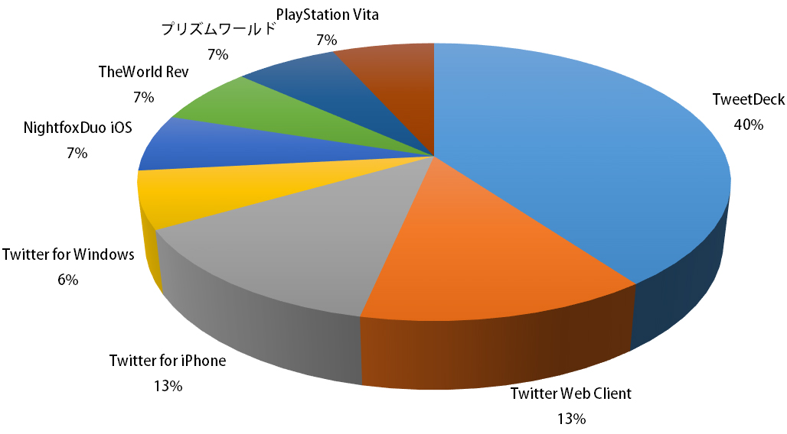
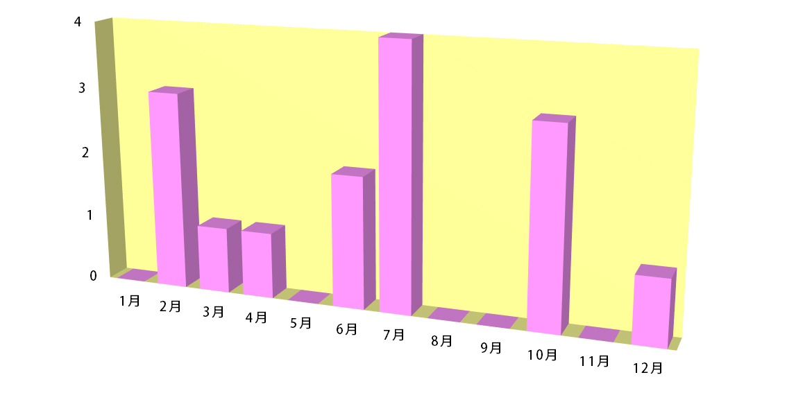

Production by @4Ri_i Presented by @sudosan © Copyright Syaroshico Police Department. All Rights Reserved.

| 初代 | ゆずぽん。 | 2015/07/14 | TweetDeck |
|---|---|---|---|
| 二代目 | よんりー | 2015/07/24 | TweetDeck |
| 三代目 | わふすけ | 2015/07/25 | Twitter Web Client |
| 四代目 | 赤きち | 2015/10/16 | TweetDeck |
| 五代目 | はろはろー | 2015/10/21 | TweetDeck |
| 六代目 | 337 | 2015/10/31 | PlayStation Vita |
| 七代目 | あぜサンチーム | 2016/02/05 | NightfoxDuo iOS |
| 八代目 | 譲崎ひろ | 2016/02/14 | TheWorld Rev |
| 九代目 | はるぬか | 2016/03/12 | Twitter for Windows |
| 十代目 | 赤きち ★★ | 2016/04/10 | TweetDeck |
| 十一代目 | しずくβ | 2016/06/24 | Twitter Web Client |
| 十二代目 | とわカス | 2016/06/28 | Twitter for iPhone |
| 十三代目 | はるしき | 2016/07/14 | プリズムワールド |
| 十四代目 | ぷちくら | 2016/12/29 | Twitter for iPhone |
| 十五代目 | 赤きち ★★★ | 2017/02/07 | TweetDeck |
最終更新：2017/02/19 ★★……二冠 ★★★……三冠
上表に誤字・脱字・リンクミス等ありましたら、お手数ですが@4Ri_iまでご連絡いただけると幸いです。


しゃろほーとは、日本時間(JST)0:00:00にTwitterで行われる競技です。Twitterのアカウントさえあれば誰でも参加することができます。0:00:00.000以降、最も早い時間に「しゃろほー」と呟くことができれば勝利となります。0:00:00.000ちょうどに呟くと「しゃろほーマスター」に認定され、殿堂入りすることができます。しゃろほーマスターになるには、使用する端末とTwitterクライアント、そして時計のコンディションが重要になります。腕と機材を磨き上げ、しゃろほーマスターを目指しましょう。